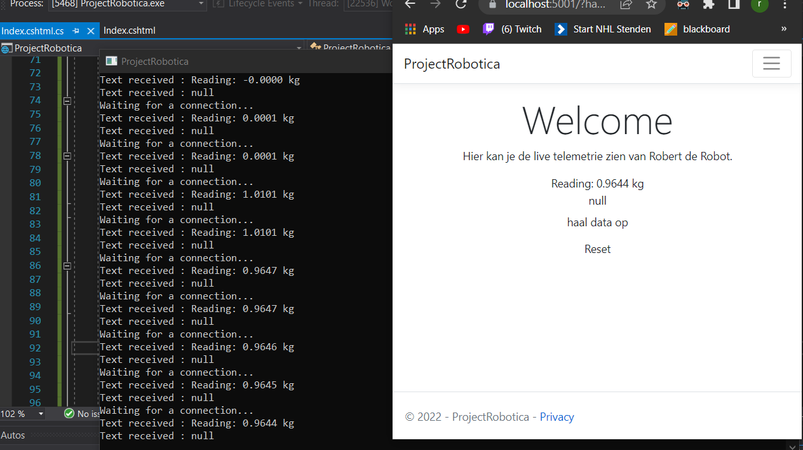

Je kan niet altijd 6 gooien
Geschreven op: 8 Juni 2022
Watskebeurt?
Vandaag waren we weer druk bezig met Robert klaar maken voor de kwalificatie, helaas ging niet alles geheel volgens plan. Toen wtb de robot opniew aan t opbouwen was zijn er een paar motortjes kapot gegaan. Dit word nu zo snel mogelijk gefixt zodat Robert weer kan rijden.
De integratie Demo
Geschreven op: 2 Juni 2022
Loopt alles nog steeds op schema?
Vandaag was de integratie demo. Een belangrijk moment voor ons om te meten of we op schema lopen. Net als de deelfunctie demo komen er een docent van alle betrokken opleidingen, daarnaast komt er ook een docent om met onze scrum-master te kijken naar het proces. Een samenvatting van de feedback:
- Voor ICT was het advies vooral: Ga zo door. De software die is geschreven is heel goed. Alleen aan het eind van het project moet er een hele boel software geschreven zijn. Oftewel: Goed bezig, ga zo door!
- Ook bij elektrotechniek is de docent tevreden. Ze zijn blij dat de ET'ers goed nadenken over de pcb's.
- Bij WTB gaat het wel aardig. De wtb docent gaf aan dat er tempo moest worden gemaakt en dat advies wordt nu goed gevolgd.
Robert's eerste stapjes?
Geschreven op: 1 Juni 2022
Robert komt tot leven
Vandaag hebben Rick en Kevin Robert leren rijden. Ze sturen vanaf de raspberry de arduino aan die met behulp van een motor drive controller(rechts in beeld). Zoals je kan zien zit de sfeer er goed in bij onze ICT'er
Controller
Geschreven op: 31 Mei 2022
Controller op PCB
Ondanks de arriva stakingen van vandaag word er hard gewerkt op het kantoor. Hier zie je dat de controller nu werkend is op het pcb. Nu kan het omhulsel worden gemaakt.
Robert op het internet?
Geschreven op: 30 Mei 2022

Robert en zijn weegschaal
Robert kan nu de eerste data sturen naar een website. Hij kan nu live het gewicht van de weegschaal doorsturen naar de website waardoor je nu vanaf de site kan zien hoe zwaar het object is dat op de weegschaal ligt.
Robert 1.0 is geboren!
Geschreven op: 25 Mei 2022

Robert
Na een boel designen en uitwerken is hij dan eindelijk hier! Robert 1.0. De body en de poten zijn aan elkaar gezet en de motoren zijn erop gemonteerd. Een mooi 1ste model wat veel stof tot nadenken geeft.
PCB voor de controller
Geschreven op: 25 Mei 2022
ET is on fire!
Hier zie je de printplaat van de controller, deze is zo compact mogelijk gemaakt zodat hij in de controller past. De toleranties waren klein maar uitendelijk is alles goed afgelopen en past alles perfect.
De bouw van Robert
Geschreven op: 24 Mei 2022
Robert is hier!
Onze wtb'ers zijn de afgelopen tijd druk bezig geweest met de body van de robot. Zo kan je hier zien dat het lichaam word gemaakt.
Ook de controller in topvorm!
Geschreven op: 23 Mei 2022
Onze controller
Er wordt overal hard gewerkt in het lokaal van groep 10, zo is de controller helemaal af!
Timo legt uit wat het is en doet: Hier zie je het display van de controller, en hoe de joysticks en knoppen erop verschijnen, ook error codes, en een troubleshoot modus is beschikbaar
Harde werkers
Geschreven op: 20 Mei 2022
Deelfunctie demo
Deze week stond in het teken van de deelfunctie demo. Woensdag kwamen een aantal docenten langs om te kijken naar de progressie van Robert en feedback te geven op de dingen die we al hebben gemaakt. De docenten waren blij met de vooruitgang wat voor het hele team een teken is dat we goed bezig zijn.
Het begin van ons blog
Geschreven op: 13 Mei 2022
Het begin van Robert
De eerste dingen voor Robert worden gemaakt, de eerste schetsen voor Robert zijn er, de controller word gebouwd en er zijn stukken software geschreven. Zo kan Robert al een blauw blokje herkennen en de zwarte lijn op het parkour. Ook is er een website gemaakt om iedereen op de hoogte te houden van de voortgang van Robert.
Over ons
Wij zijn groep 10 Robotica, en wij zijn bezig met het maken van Robert de Robot